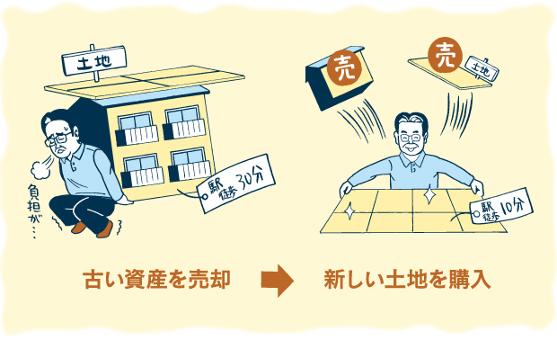
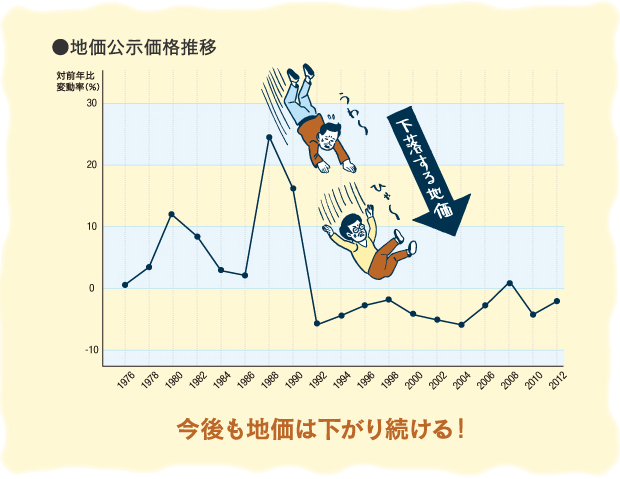
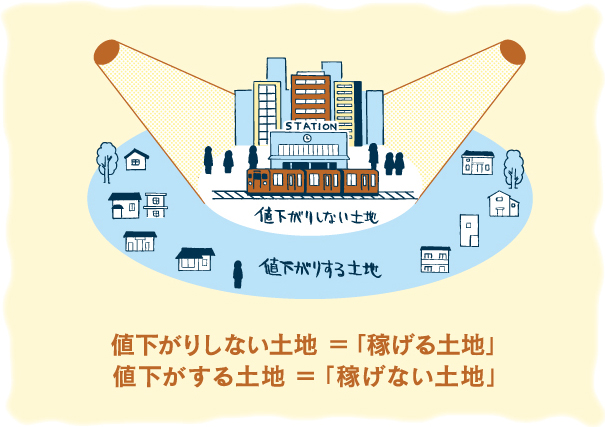
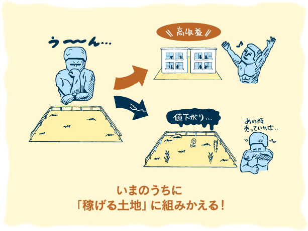
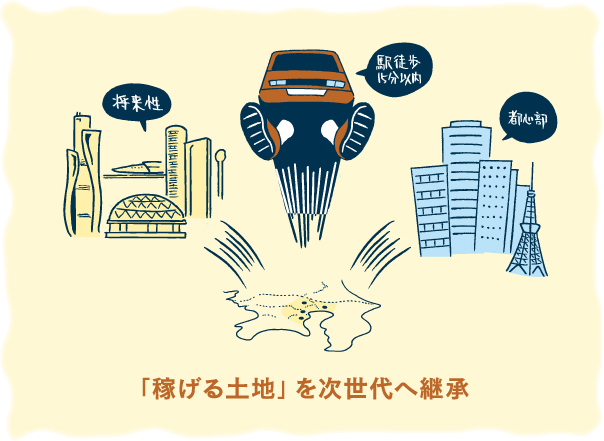

アパートに向いていない土地はどうする？
安定した収益を得ることができる賃貸アパート経営は、大変有効な土地活用法です。アミックスでは、多くの土地オーナー様にアパート建築・経営をご案内してまいりました。
ただ、今の社会情勢を考えると、すべての土地で賃貸アパート経営が成功するとはいえません。現実には「アパート経営に向いていない土地」があり、土地オーナー様のご希望であっても、おすすめできないこともあります。
では、もし所有の土地が「アパート経営に向いていない土地」であったとしたら、どうしたらよいのでしょう。
アミックスがおすすめするのは「資産の組みかえ」です。ご自分の資産（土地）を上手に組みかえることができれば、将来にわたって安定的に“利益を生み出す”ことも可能となります。

下がり続ける地価
戦後から1980年代後半のバブル景気まで、日本の地価は右肩上がりに上昇を続け、土地をもっていれば「子々孫々まで安泰」と信じられていた時代でもありました。
バブル崩壊を機に地価が下落して土地神話は崩れ去り、すでに数十年が経ちますが、現在でも少子高齢化や雇用不安など、多くの人が漠然とした不安を抱える状況が続いています。
この先も地価上昇を見込める状況にはなく、残念ながら今後もじりじりと下がり続けるでしょう。場所によっては、大きく下がってしまうことがあるかもしれません。

稼げる or 稼げない 二極化の時代
地価が下がり続けるといっても、すべての土地が同じように値下がりするわけではありません。なかには、値下がりしない（場合によっては値上がりする）稀少な土地もあります。
値下がりしないのは、東京都心を中心に駅から近い住宅地のほか、首都圏の繁華街などになるでしょう。このような場所であれば、オフィスや店舗、住宅などの需要が多いため、賃貸として安定した収益を生み出すことができます。値下がりしない土地＝「稼げる土地」ということです。
それでもやはり、人口が減少して経済情勢も厳しい現在の状況では、多くの土地が値下がりしていくことは避けられません。今、地主さんは、ご自分の土地が「稼げる土地」なのか、そうでない土地なのかを見極める時期にきているといえます。

「値下がりしない優良な土地」に当てはまる条件とは･･･
- ・ 人気がある
- ・ 将来性が見込める
- ・ 安定した収益が見込める
- ・ 換金性があり売却できる
- ・ 相続税の軽減につながる
一見別々のようにも見える5つの要素はすべてつながっています。人気のある場所は、のちのちまで安定した家賃収入が見込めますし、皆が買いたい土地なら取引価格が相続税評価額より割高となり、相続税の軽減にもつながります。
5つの要素のなかで最も大切なことは収益性です。賃貸住宅を建てることで将来にわたって安定的な家賃収入が得られるか＝「稼げる土地」であるかということです。
具体的に「稼げる土地」に当てはまる土地はといえば、住宅地であれば東京都心部、または東京近郊の通勤通学圏内で、駅からも近い場所です。人口が減少しているなかでも、東京にはいまだ人が集まり続けています。「東京ブランド」はまだまだ健在なのです。
では、「稼げる土地」に該当しない場合、どうしたら良いのでしょうか。
答えは「お持ちの資産を組みかえること」。
持っている土地を「稼げる土地」に取り替えることができるのです。

稼げない土地」を「稼げる土地」へ…
「稼げる土地」の場所を具体的にあげると･･･
- ・ 東京都心部に位置する、もしくは都心まで容易に通勤・通学ができる
- ・ 最寄り駅より徒歩15分以内である
- ・ 将来性があり、今後も安定した収益を見込むことができる
東京都心部は埼玉県や千葉県、神奈川県などの中心部と置き換えてもかまいません。条件に当てはまらない場合、検討が必要になります。
つまり、「売却と購入」です。もっている土地を売却して、あらたに「稼げる土地」を購入するのです。
持っている土地のすべてを売却する必要はありません。一部でもいいのです。「稼げる土地」を購入した後に、所有の土地を売却してもいいのではないでしょうか。目的は売却して現金を手にすることではなく、お持ちの土地を「稼げる土地」へ交換することです。
ただ、個人の地主さんが相続した土地を売却すると、約20％の譲渡税がかかります。「20％も持っていかれたら損をするのでは･･･」と思われるかもしれませんが、実はそうでもないのです。
たとえば、所有している土地を1億円で売却して2,000万円納税し、残りの8,000万円でアパートを買ったとします。それでもアパートから年400万円の収入が得られれば、少なくとも5年で税金分は取り戻すことができるのです。もし売却しなければ、その5年の間にも土地は値下がりつづけてしまうことになります。
先祖代々受け継いできた土地であれば、売却することは容易ではないかもしれません。でも、値下がりしつづけることを知りながらそのままにしておくより、安定した収益を生み出す不動産に組みかえて次世代に継承させることができれば、ご先祖様にも喜んでいただけるのではないでしょうか。

「資産の組みかえ」関連書籍のご案内
これからの不動産経営において成功のカギとなる「資産の組みかえ」。弊社社長執筆書籍第2作目となる、『あなたを救う資産の組みかえ「稼げる土地」「稼げない土地」』では、詳細なデータをもとに、将来の不動産市場を分析し、少子化時代に対応する安定経営維持の秘訣ををまとめております。ぜひご一読ください。